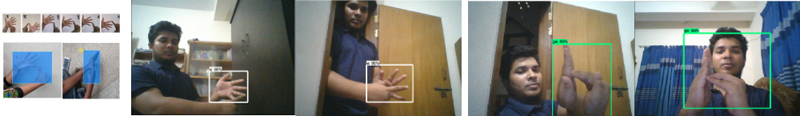

Project Page
Bangladeshi sign language detection using Deep Learning (2018)
[Ongoing]
- I am mentoring a group of my students in this project. We are developing a technique to detect Bangladeshi Sign Language (BdSL) from images in real time using neural networks. For this purpose, we develop a dataset – BdSLImset (Bangladeshi Sign Language Image Dataset) – to train our system.
- A paper titled as – ‘Real Time Bangladeshi Sign Language Detection using Faster R-CNN’ is submitted at International Conference on Innovation in Engineering and Technology (ICIET) 2018 and is currently under review.
- Collaborators:
- Oishee Hoque
- Md. Saiful Islam
- Al-Farabi Akash
- Alvin Paulson
- Download the dataset: BdSLImset.

Cartoon2real: Cartoon to realistic image synthesis using GAN (2018)
[Ongoing]
- This is a GAN based approach for cartoon to realistic image synthesis. I am mentoring a group of students in this project. Here, we trying to translate cartoon-styled images into theri real-world scenes. In our work, we are using generative adversarial networks (GAN). We are mainly focusing on CartoonGAN (2018) approach and attempting to reverse their technique.
- Collaborators:
- Arefeen Sultan
- Labiba Kanij
- Nahidul Islam
- Syed Hossain Khan
Implementing Atlas of Connectivity Maps for ICON Grid (2014)
[Completed]
- This project was a part of my MSc thesis. The goal of this project is to impelement the Atlas of Connectivity Maps on ICON (Icosahedral Nonhydrostatic) data. I developed a system that unfold the semiregular grids of the ICON model and map its connectivity information into 2D arrays corresponding to 2D regular pateches. I created a GUI to explore the ICON vertices and connectivity information interactively. The project was succefully completed as SciVis course project in fall 2014.
- See the project report.
- See the presentation slides.
- The project was later exteneded and multiresolution filters are applied on the 2D pateches to explore different levels-of-details (LoDs). The project was presented as a poster in CPSC Industrial Day 2015, University of Calgary. See the poster here.
- Get the code on GitHub.